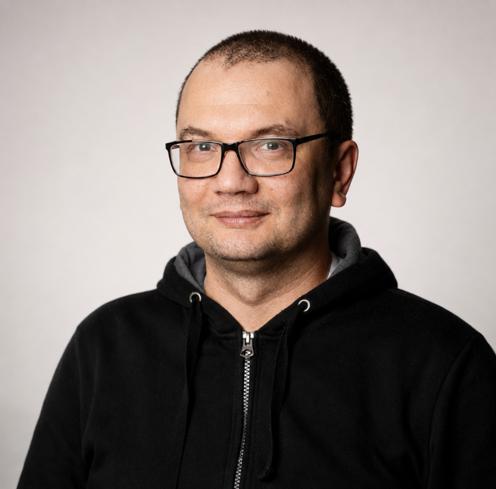

IT, Requirements & Teamkoordination
Requirements, Entwickleraufgaben, Product Owner Rolle, Scrum-Master-Rolle, Backlog, Priorisierung, Release- und Abnahmevorbereitung.
Zielregion: Soltau / Heidekreis / Niedersachsen
Business Analyst & IT-Teamleiter mit technischer Service- und Elektronikpraxis
Requirements · Scrum-Master-Rolle · Abnahme-/Nutzertests · UI-Prüfung · IT-Infrastruktur · Elektronikdiagnose

Aktuell arbeite ich an der Schnittstelle zwischen Geschäftsprozessen, interner IT, Entwicklungsteam und Fachbereichen. Mein Schwerpunkt liegt auf Requirements, Entwickleraufgaben, Scrum-naher Teamkoordination, UI-/Website-Prüfung, Abnahme- und Nutzertests sowie technischer Dokumentation.
Parallel dazu bleibt praktische Technik ein fester Teil meines Profils: Ich beschäftige mich auch privat mit Elektronik, Reparatur, Diagnose, Home-Lab, kleinen Serverdiensten und Hardware-/Embedded-Themen. Besonders interessieren mich Aufgaben, bei denen Systeme nicht nur organisiert, sondern praktisch verstanden, geprüft, repariert, dokumentiert und stabil betrieben werden.
Für die nächste berufliche Station möchte ich meinen Schwerpunkt stärker in Richtung hands-on Technik, Elektronikdiagnose, technischer Service, IT-nahe Systemdiagnose oder Infrastrukturservice verlagern. Meine IT-Erfahrung aus Analyse, Tests, Teamkoordination und Dokumentation sehe ich dabei als Zusatznutzen: Sie hilft mir, technische Probleme strukturiert zu erfassen, sauber zu dokumentieren und zwischen Anwendern, Technik und Umsetzung verständlich zu vermitteln.
Requirements, Entwickleraufgaben, Product Owner Rolle, Scrum-Master-Rolle, Backlog, Priorisierung, Release- und Abnahmevorbereitung.
Abnahme-/Nutzertests, UI-/Website-Workflows, Designabgleich, Bug Reports, Postman, Browser DevTools, MCP-/Playwright-gestützte UI-Prüfung.
TrueNAS/NAS, SMB/Rechte, Windows/Linux, RDP/USB-over-RDP, VPN/DNS, Backups, Monitoring, Docker-nahe lokale Dienste.
Board-Level-Service, Datensicherung/Backup, Stromversorgung, Mainboard-Diagnose, Oszilloskop/Logikanalysator, Rework, Funktionsprüfung.
Interne IT-Projekte, ERP-/Touristiksoftware, Anforderungen, Scrum, Abnahme- und Nutzertests, UI-/Website-Prüfung, Schnittstellen, Dokumentation und Teamkoordination.
Einführung von Scrum-Arbeitsweise, Entwickler-Sprints, Aufgabensteuerung, Abnahme- und Nutzertests und Release-Abstimmung.
Pflichtenhefte, Stakeholder-Abstimmung, Systemanalyse und Konzeptarbeit.
Anforderungsanalyse für Reisemanagementsystem und Pflichtenheft.
Handelsautomatisierung, Webshop, Server-Administration, CRM-/1C-Integration.
Werkstattprozesse, komplexe Diagnose, Reparaturqualität, OEM-Service, Ersatzteile, Schulung und Eskalationsmanagement.
Komplexe Instandsetzung von Computer-/IT-Technik und elektronischen Baugruppen.
Garantie- und kostenpflichtige Reparaturen von Computertechnik.
Requirements, Entwickleraufgaben, User Stories, Use Cases, Akzeptanzkriterien, UI-/Website-Tests, Abnahme-/Nutzertests und Dokumentation im Umfeld interner ERP- und touristiknaher Softwareprozesse.
Zentraler Projekt-Hub auf TrueNAS-Basis mit SMB-Shares, Rechte-/Benutzerstruktur, Fachbereichsnutzung, Performance-Tuning und technischer Dokumentation.
Interne Monitoring-Anwendung zur Beobachtung von Websites, Projekten und technischen Zuständen mit Fokus auf Transparenz, Fehlererkennung und Systemübersicht.
Werkzeuge und Skripte für Codebase-Orientierung, Swagger/OpenAPI-Auswertung, Projektkarten, Roadmaps, Usecase-Indizes und technische Dokumentation.
Private Home-Lab-Umgebung mit n8n, Telegram-Bot, Caching-DNS, Werbeblocker, VPN-Client, Home Assistant und lokalen Serverdiensten.
Privates Embedded-/Hardware-Projekt mit Armbian userpatches, U-Boot/SPL-, Kernel- und DTB-Anpassungen, LAN/UART/ADB-Diagnose und reproduzierbarer Build-Dokumentation.
Notebooks, PCs, Mainboards, Monitore, Tablets, Smartphones, Netzteile, Grafikkarten, Router, TV-Boxen, Peripherie.
Datensicherung/Backup, Stromversorgung, Mainboard-Diagnose, Schaltplanlesen, Oszilloskop/Multimeter, Logikanalysator, SMD-Löten, Löten bedrahteter Bauteile, Heißluft, Mikroskop, BGA-Rework, Firmware/BIOS/EEPROM, Funktionsprüfung.